全部建模图均来自合成测试数据；未完成真实网页数据的整条建模链。
当前五倍规则GAN：两后端CPU两轮，64→320条，均未通过质量初筛。历史GPU5000轮确实完成，但64→2000条属于旧规则。XGBoost本样例未优于末值基线。已有LLM回答来自独立的网页研究。
点击图片打开原图。完整说明见 先读说明.md，问题解答见 相关问题与回答.md。
验证集和测试集的预测值、残差与残差分布。
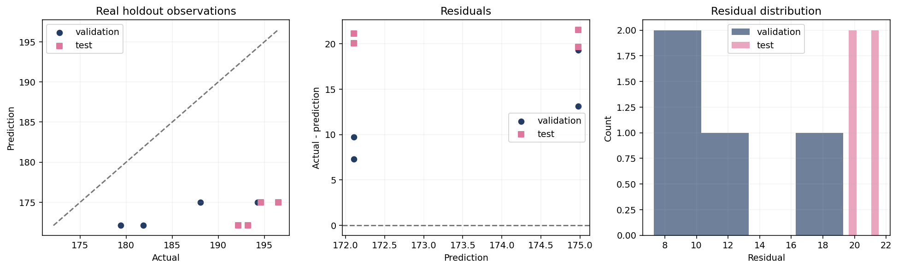
01_XGBoost_合成年度数据/01_预测与残差.png查看 XGBoost 是否优于沿用上期值；本样例未优于该基线。
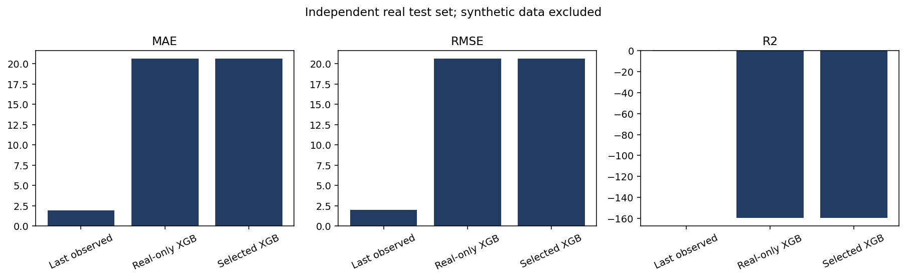
01_XGBoost_合成年度数据/02_模型与基线比较.png合成年度序列的留出预测与条件预测，不是产业预测。
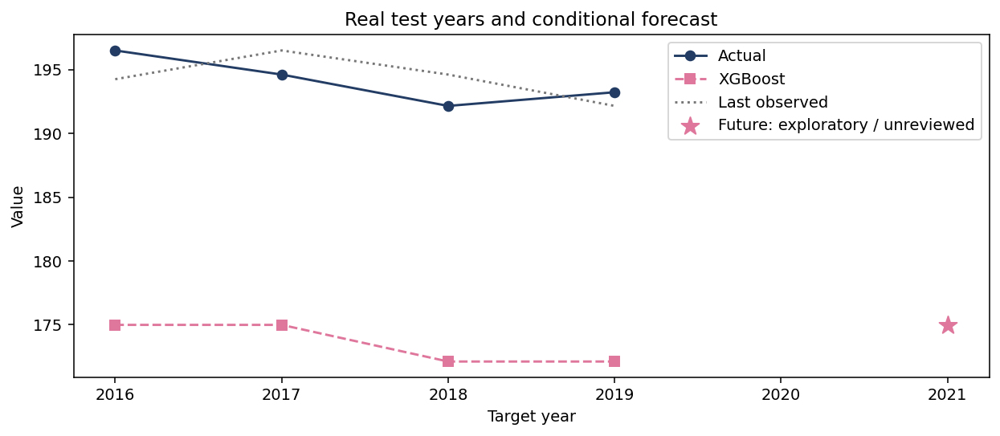
01_XGBoost_合成年度数据/03_趋势与预测.png模型对各特征的使用程度，不代表产业因果。
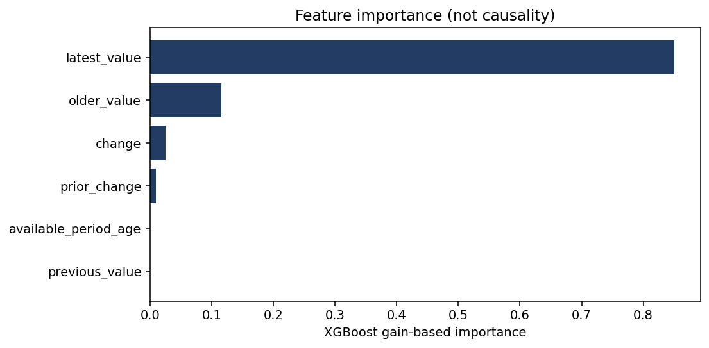
01_XGBoost_合成年度数据/04_特征重要性.png实际 XGBoost 原生 TreeSHAP，解释测试样本的模型行为。
01_XGBoost_合成年度数据/05_TreeSHAP.png训练输入的缺失或无效情况。
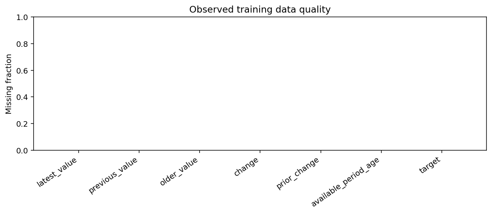
01_XGBoost_合成年度数据/06_训练数据质量.pngCPU实际训练2轮；64条原始合成夹具、320条生成数据；未通过初筛。
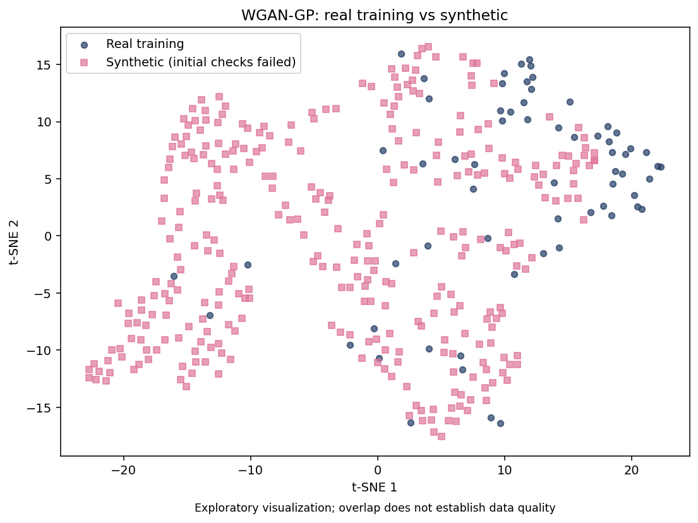
02_WGAN_当前五倍规则/pytorch/gan_tsne.png仅用于验证训练与出图功能，2轮不足以作为训练效果验收。
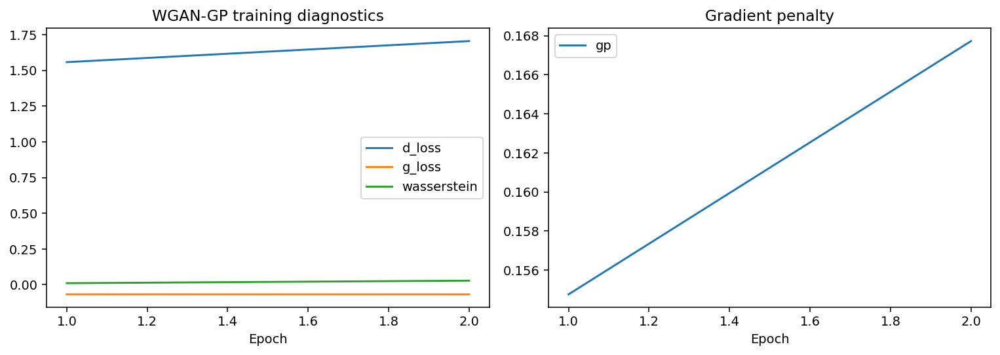
02_WGAN_当前五倍规则/pytorch/gan.pngCPU实际训练2轮；64条原始合成夹具、320条生成数据；未通过初筛。
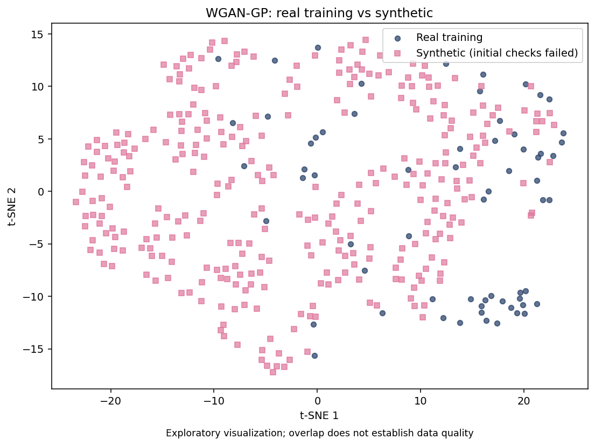
02_WGAN_当前五倍规则/tensorflow/gan_tsne.png仅用于验证训练与出图功能，2轮不足以作为训练效果验收。
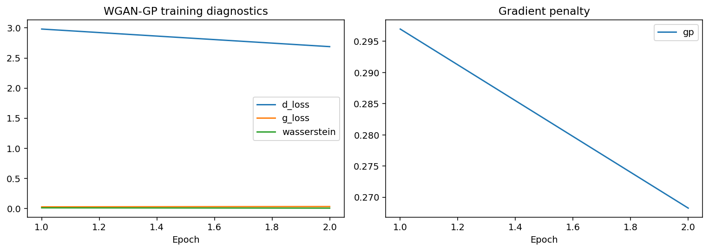
02_WGAN_当前五倍规则/tensorflow/gan.pngPyTorch：GPU5000轮、64→2000；TensorFlow：CPU100轮、64→64。均为合成夹具，早于五倍规则。
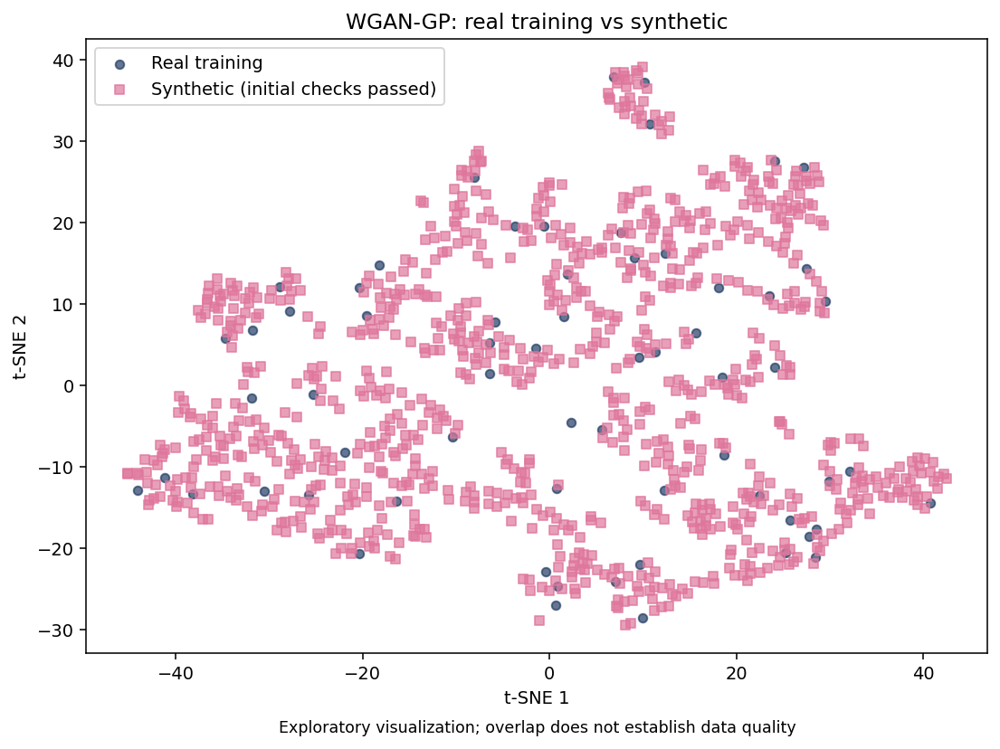
03_WGAN_历史配置存档/pytorch/gan_tsne.pngPyTorch：GPU5000轮、64→2000；TensorFlow：CPU100轮、64→64。均为合成夹具，早于五倍规则。
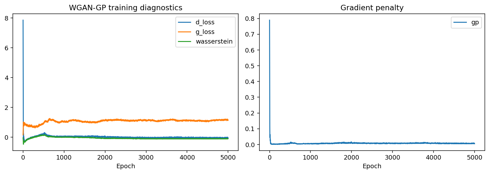
03_WGAN_历史配置存档/pytorch/gan.pngPyTorch：GPU5000轮、64→2000；TensorFlow：CPU100轮、64→64。均为合成夹具，早于五倍规则。
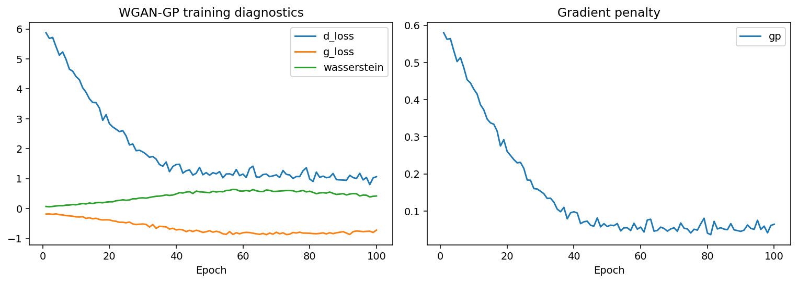
03_WGAN_历史配置存档/tensorflow/gan.png100年合成年表的三进程验收，未采用GAN，LLM关闭；与01目录50年算法测试是不同批次。
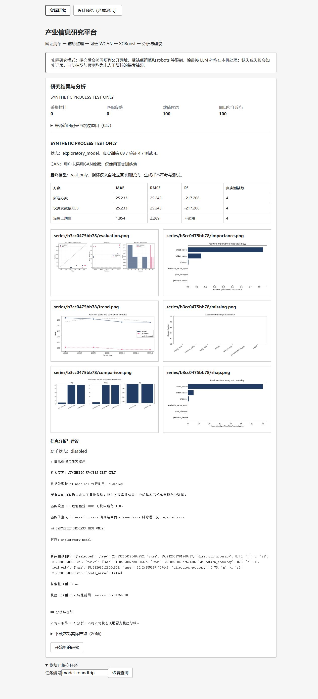
05_验收记录/网页总装截图_100年合成数据.png以下为历史API原文，不是上方测试模型的分析。第4份是旧版建议输出。
当前数据不足，无法判断餐饮相关发展趋势。原因是本轮未提供任何来源记录或同口径年度序列，文档、段落、候选事实和序列行计数均为0，仅有的研究摘要也只表明处于“data_only”状态并指出缺少口径与年份明确的年度候选。没有可引用的历史变化或可靠预测依据。
当前数据不足，无法判断产业发展趋势。 原因： - 本轮材料是1979—1981年全国国民经济统计公报的摘录，属于宏观总量数据（工农业总产值、工业总产值、农业总产值等），未识别出任何明确产业主体或统一的产业指标口径；研究摘要明确“缺少明确产业主体：1132条”“缺少年份、主体、地域、指标或单位，无法确定可比口径：1154条”[record_id: 23f05d0d-04bf-5633-aee3-d127c1a650c9][record_id: f1e4c484-6be0-5f40-8fc6-c66ba6c97517][record_id: 520206e7-acfb-59b9-b382-8927a88581ff]。 - 仅有可支持的历史片段：1980年工农业总产值比上年增长7.2%、工业总产值增长8.7%、轻工业产值占比由43.1%升至46.9%[f1e4c484-6be0-5f40-8fc6-c66ba6c97517]；1981年工农业总产值比上年增长4.5%、农业总产值增长5.7%[520206e7-acfb-59b9-b382-8927a88581ff]。但这些数字的年份、地域、价格口径（1970年/1980年不变价）在候选事实中均标注“需核对”，且不同年份使用不同不变价格，不能直接拼成可比时间序列。 - 无同口径时间序列或回测指标，不能给出可靠趋势预测；材料中也没有模型预测结果可供评估。
发展趋势：当前数据不足以判断明确的产业发展趋势。 依据与原因： - 本轮材料只提供了零散的单年或短期片段，缺少同一地区、同一指标、可比口径的连续时间序列。贵阳2023年农林牧渔业总产值350.61亿元、增长4.1%，其中种植业263.92亿元、增长4.3%，畜牧业57.52亿元、增长2.8%等，只能说明该年各分项同比增长，不能据此推断后续走势[0ae6fbf0-9c41-590a-8fe6-2471f527268a]。 - 消费类数据多为节假日、活动期等非年度口径，如青云市集2023年6—8月接待游客超347万人次、营业收入1.067亿元[55c12718-fd70-5019-8562-c364b67eccd7]；2019年数博会期间贵阳住宿业收入6200万元、增长14.8%，餐饮业1.26亿元、增长20%[01d029e3-5e08-523e-8708-664fc308fbbf]；春节假期观山湖区商超人流量同比增长14%以上、销售额增长8.5%以上[baab099b-a749-5f52-9f38-47ee9f786790]。这些是特定时段同比，不能与年度农业产值等混用，也不能拼成连续趋势。 - 商业设施数据为2020年单年存量与销售收入，如步行街9条、销售收入约13.52亿元，购物中心40个、约139.66亿元，连锁超市门店129个、约132.35亿元[a796251c-9810-5698-8056-4baf142cd8ac]，仅有单点，无法判断扩张或收缩方向。 - 研究摘要显示候选事实139条全部被排除、清洗候选为0、序列行为0，且存在缺年份、缺主体、缺地域、口径需复核等问题；因此没有可用于趋势拟合或回测的同口径序列，不能给出可靠预测，也不编造R²/RMSE等指标。 可信范围：以上仅为给定材料中可辨认的单期历史陈述，其中部分还标注为需核对原文的口径限制；不构成对产业未来走势的判断。
**先给结论：现有材料不足以支撑“贵阳餐饮行业发展趋势”的判断，更不能做趋势预测。** 三条材料讲的都是贵阳（及贵州）的产业政策和营商环境，没有一条是餐饮行业的规模、结构或时间序列数据。下面先给可执行的下一步，再说明依据与缺口。 ## 一、有优先级的下一步 **1. 先定“趋势”的口径与指标，再补数（最高优先级）** - 理由：当前系列行数为 0，没有任何同口径时间序列；未定指标就检索，容易把政策文件、单店报道、平台榜单混在一起。 - 需要的材料：请用户确认三项——①指标（餐饮收入/营业额、法人企业数、门店数、从业人员、限上餐饮零售额，选 1–2 个主指标）；②地域（贵阳市全域 / 仅市辖区 / 含贵安）；③时间跨度（如 2019–2024 年度）。数据源优先贵阳市统计局年鉴与统计公报、贵州省统计局、贵阳市商务局。 - 完成标准：形成一张“年份—指标—口径—来源—发布日”的空白采集表，字段固定后再填数。 **2. 把“餐饮企业/品牌/门店”三类主体分开建表** - 理由：餐饮研究最常见的错误是把连锁品牌数当企业数、把门店数当法人单位数；贵阳的酸汤鱼等品类尤其容易品牌与门店混算。 - 需要的材料：市场监管部门经营主体登记数据（按行业代码）、限上餐饮企业名录、连锁品牌门店清单，分别标注统计时点。 - 完成标准：三类主体各自有独立口径说明和统计时点，互不替代。 **3. 对现有 3 条材料只做“背景证据”登记，不进入趋势分析** - 理由：[97df37e9-78b1-5e21-97af-eae0e49c4f11] 是《贵阳市餐饮经营者规范经营20条措施》的**征求意见通知**（2024-10-16），只能说明监管方向，不是行业规模数据，且最终稿是否发布**待核实**；[985e3824-2124-5342-8c4b-1fcfc9c42192] 是贵阳获批国家“三新”消费试点城市的政策信息（2025 年获批，文中“20 25 年”为原始排版问题），属政策背景，与餐饮规模无直接数量关系；[ffd74ed8-2131-5df3-ade5-c20153f2bb42] 涉及“高效办成一件事”营商环境，与餐饮趋势关联很弱。 - 完成标准：每条材料标注“类型=政策/背景、可否用于趋势=否”，避免后续被当作行业证据引用。 **4. 若要谈贵阳餐饮的结构性变化，单列“可观察方向”清单并逐项找证据** - 理由：政策文件能提示方向（规范化经营、消费新场景、IP 联名），但不能证明行业已发生该变化。 - 需要的材料：每个方向配 1 个可量化代理指标（如限上餐饮企业数变化、外卖/团餐相关登记主体数、商业综合体餐饮铺位占比等），并注明来源与年份。 - 完成标准：每个方向至少有一条同口径数据或明确写“待核实”。 ## 二、依据与数据状态说明 - **来源陈述**：三条材料内容如上，均为政府网站公开信息，发布日期分别为 2024-10-16、2026-01-23、空（[ffd74ed8-2131-5df3-ade5-c20153f2bb42] 无发布时间，使用时需补发布时间）。 - **研究摘要状态**：status=data_only，documents=15、passages=606、selected_passages=6，但 candidate_facts=0、series_rows=0，且明确提示“没有口径、发布时间、年份均明确且无冲突的同口径年度候选”。这说明后台只完成了检索与选段，**没有形成任何经审核的事实或序列**；自动摘要不构成事实证据。 - **估算推断**：无。材料中没有任何数字可用于推算餐饮规模或增速，我不做此类推算。 - **预测限制**：没有同口径真实时间序列，也没有任何回测指标，因此不能给出贵阳餐饮的趋势预测，也不存在可引用的 R²/RMSE。 ## 三、待用户确认的口径选择 1. 主指标用“餐饮收入（营业额）”还是“限上餐饮零售额”？（两者统计范围差别大，不可混用） 2. 地域是否含贵安新区、是否区分市辖区与县域？ 3. 时间跨度与频率（年度/季度），以及是否要求所有数据出自同一发布体系？ 4. 研究对象是否要落到“酸汤鱼”等具体品类？若是，需另设品类口径（菜系、门店、预包装产品分开），不能与全行业餐饮数据混算。 确认以上四项后，我可以据此把采集表字段和缺口清单进一步细化。